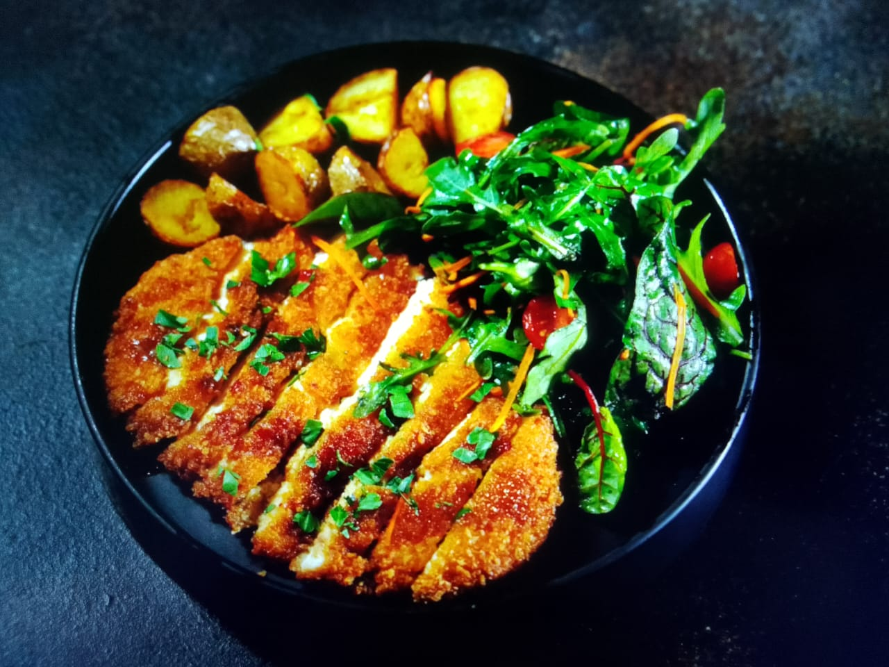

Fried Potatoes and Grilled Chicken
Ingredients:
- Potatoes
- Chicken breasts
- Olive oil
- Spices (paprika, garlic powder, etc.)
- Lemon juice
- Salt and pepper
Instructions:
- Peel and cut the potatoes into thin slices, then fry until golden brown.
- Marinate the chicken with olive oil, lemon juice, and spices for 20-30 minutes.
- Grill the chicken on medium heat until cooked through and juicy.
- Serve the fried potatoes alongside the grilled chicken, and enjoy!